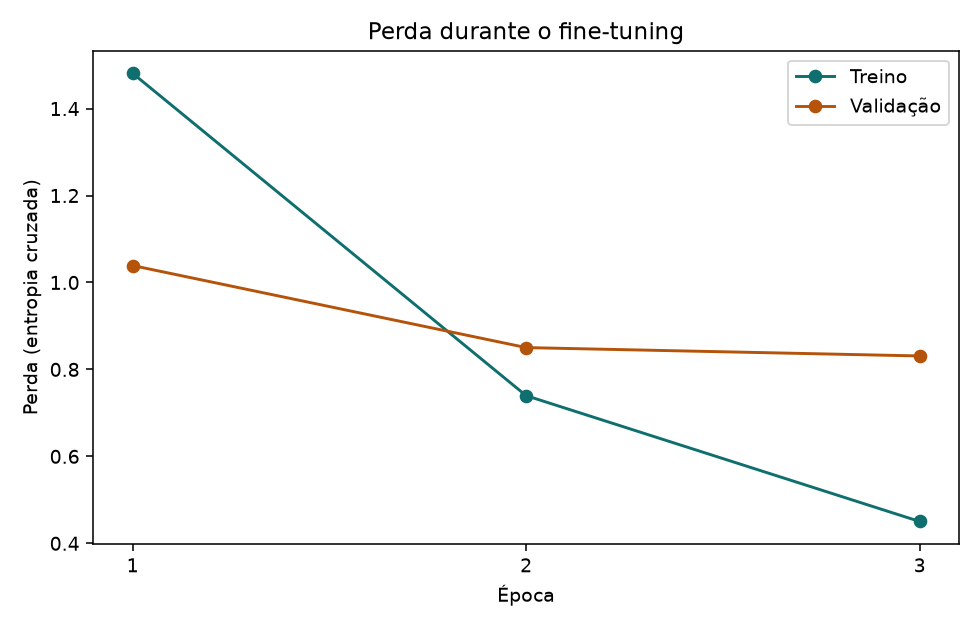
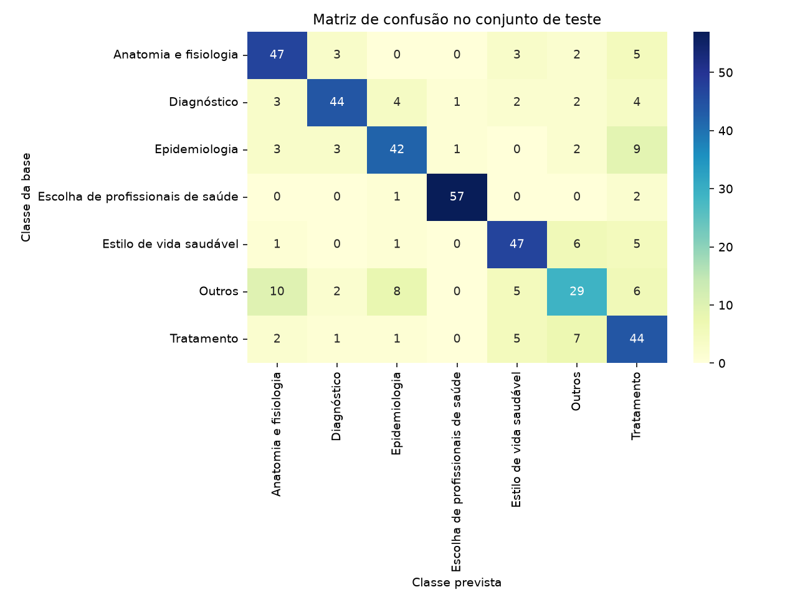
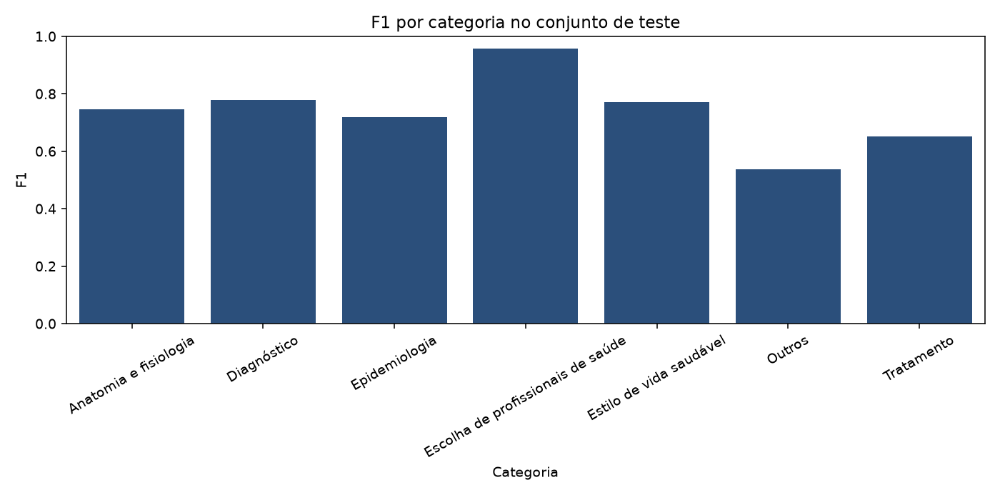
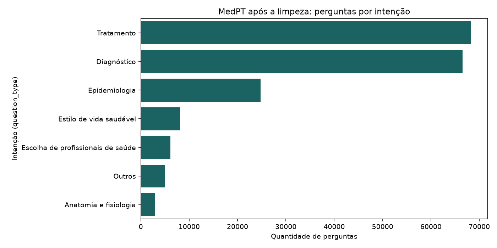
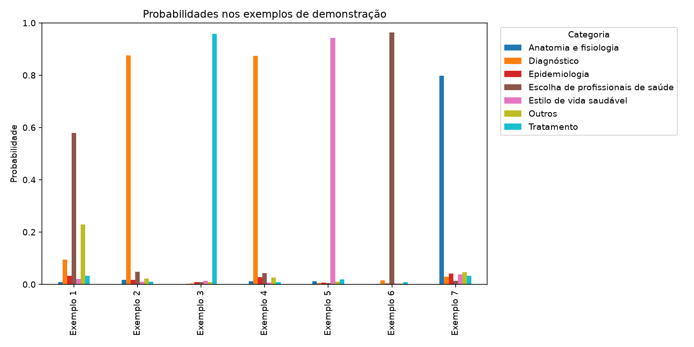

Este resultado organiza texto. Não faz diagnóstico, não indica medicamento e não substitui a equipe de uma unidade de saúde.
O programa ajusta o BERTimbau (neuralmind/bert-base-portuguese-cased) para separar a intenção de perguntas em português. Ele lê a planilha dados/base_saude.xlsx, aba perguntas. As linhas são perguntas reais do MedPT, não textos inventados. A execução abaixo rodou em CPU, sem GPU, em 11/11/2026, e terminou às 16:13 no horário de Brasília. Durou 17 minutos. Os números saem do conjunto de teste, com 420 perguntas que não entraram no treino.
Métricas no teste
Amostra de 2.800 perguntas do MedPT, 400 por classe. Divisão estratificada: 1.960 treino, 420 validação, 420 teste. Três épocas, lote 8, sequências de até 128 tokens, AdamW com taxa 2e-5. A validação melhorou nas três épocas. A de treino caiu bem mais, de 1,4812 para 0,4502, o que indica overfitting começando.
F1 por categoria
| Categoria | Precisão | Revocação | F1 | Suporte |
|---|---|---|---|---|
| Anatomia e fisiologia | 0,7121 | 0,7833 | 0,7460 | 60 |
| Diagnóstico | 0,8302 | 0,7333 | 0,7788 | 60 |
| Epidemiologia | 0,7368 | 0,7000 | 0,7179 | 60 |
| Escolha de profissionais de saúde | 0,9661 | 0,9500 | 0,9580 | 60 |
| Estilo de vida saudável | 0,7581 | 0,7833 | 0,7705 | 60 |
| Outros | 0,6042 | 0,4833 | 0,5370 | 60 |
| Tratamento | 0,5867 | 0,7333 | 0,6519 | 60 |
Gráficos da execução




Frases de demonstração
Estas frases foram escritas para a apresentação. Não fazem parte do teste e não entram nas métricas. A confiança é a probabilidade da classe escolhida.
| Texto | Categoria | Confiança |
|---|---|---|
| Estou precisando agendar uma consulta na unidade básica de saúde. | Escolha de profissionais de saúde | 58% |
| Estou com febre, dor no corpo e tosse há dois dias. O que pode ser isso? | Diagnóstico | 87% |
| Posso tomar ibuprofeno junto com o remédio da pressão? | Tratamento | 96% |
| Meu exame de sangue deu glicose alta. Preciso repetir o exame? | Diagnóstico | 87% |
| Caminhar trinta minutos por dia ajuda a controlar a pressão arterial? | Estilo de vida saudável | 94% |
| Dor no joelho há uma semana. Devo procurar o clínico geral ou o ortopedista? | Escolha de profissionais de saúde | 96% |
| Para que serve o hormônio da tireoide no organismo? | Anatomia e fisiologia | 80% |

Onde classificar um texto novo
O fine-tuning e a função que recebe um texto digitado estão no notebook notebooks/classificacao_saude_bertimbau.ipynb, feito para o Google Colab. Com os pesos já treinados na máquina, a interface Streamlit em app/demo.py também classifica e guarda o histórico da sessão. Os pesos passam de 400 MB e ficam de fora do Git. Esta página mostra a execução que já aconteceu.